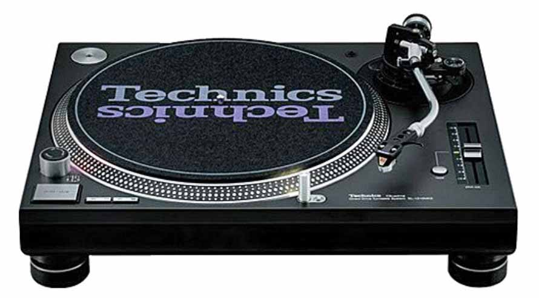
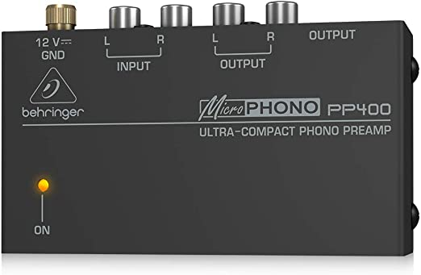
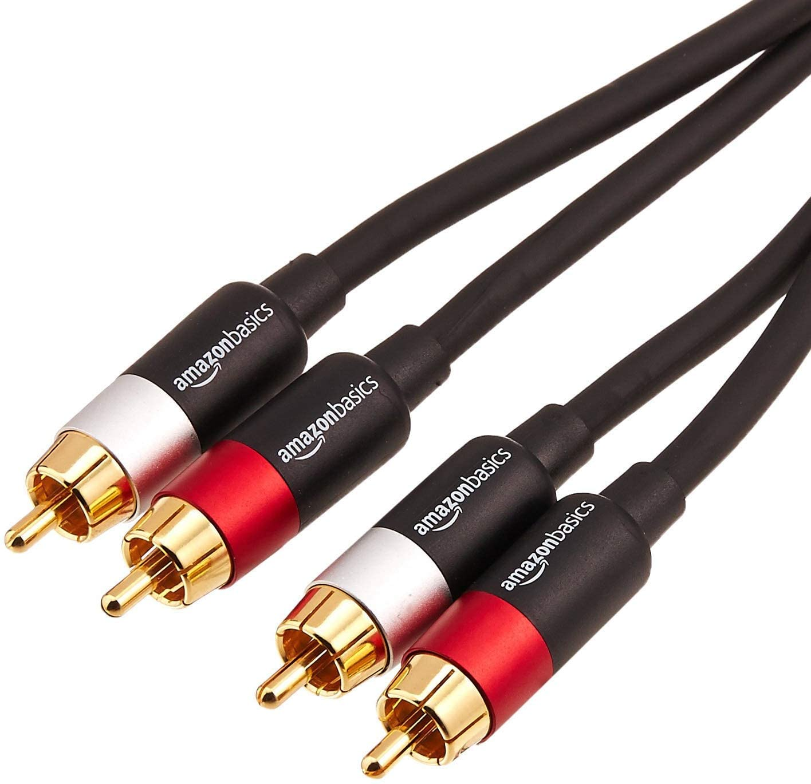

- My Equipment
- My Vinyl
- Vinyl Collecting Memes
Technics SL1200 MK5
For making hearable signal, it needs phono pre-amplifier, speakers like below :

Behlinger pp400

Presonus Eris E4
First one is active, so it can control main power and volume.
The other is passive, so it just receive the signal from the active one.


RCA to RCA cable
